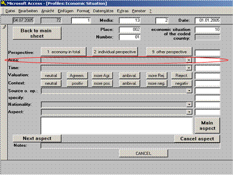
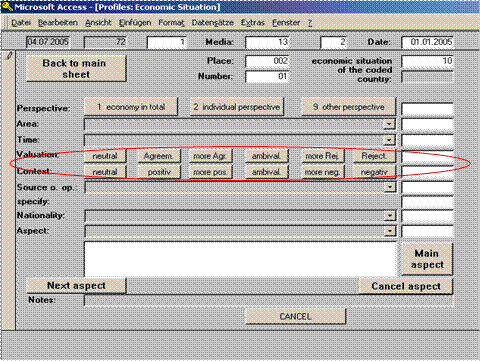

1. General information
1.1 What is media analysis? What does coding mean at Media Tenor?
Content analysis "is a research technique for the objective, systematic, and quantitative description of the manifest content of communication" (Berelson, 1952). This methodology has very often been defined as "quantitative content analysis," whereas techniques developed in the hermeneutic or linguistic tradition are labeled as "qualitative." In contrast to these other analysis methods, which try to identify and analyze the characteristic and defining elements of media content, quantitative content analysis in a first step establishes the numerical distribution of the variables and in the second step makes inferences from these findings.
In order to be objective, i.e. independent from the personal biases of the researcher, and systematic, i.e. designed with respect to the research questions and exhaustive in respect to the investigated communication, content analysis has to be based on rules. Characteristics of the media content that are evident but not covered by these rules cannot be analyzed properly within the boundaries of the content analysis and serve only as clues to the interpretation of the results.
The scope of variables that are examined in content analyses ranges from rather simple topic or protagonist lists to complicated valuations of protagonists, issues, or even the events in news reports. Whereas topics and protagonists can - at least for studies focusing on selected issues - in principle be specified in an exhaustive list, the rules for coding valuations or other similarly circumstantial variables are more difficult to define.
For a comprehensive coding system, however, topic and protagonist categories are principally open, due to the incomplete knowledge of the researcher and ongoing changes in the real world. Nevertheless, the topic and protagonist category systems can provide a framework for coding all possible types of issues and actors, be they persons or organizations. To facilitate the coding process, Media Tenor uses a coding system consisting of three levels of categories, each with a number of sub-categories. Coders are also required to enter a written note for topics and protagonists that are not included in the program's master list. The codebook can thus be updated continuously.
Media Tenor uses a computer interface for data entry that takes advantage of modern technology by dispensing with paper coding sheets. The use of the computer for coding enhances coding speed and minimizes errors by media analysts.
In contrast to the identification of topics and protagonist, coding valuations is more challenging. In order to organize the coding of valuations in a stringent way, only valuations of subjects - of persons and organizations - are coded. The valuation only refers to the description of the coded subject, not to the event covered in the news. In addition, there is continuous coding of the state of the nation in terms of economic, social and value-based developments.
One of the issues coders encounter in determining the valuation is the so-called "latent" content. Basically, valuations can be expressed in two ways: Either by the use of clearly positive or negative terms, like "villain" or "hero." This explicit rating can be contrasted with an implicit rating that embeds the description of the protagonist in a positive or negative context. Media Tenor allows for the whole story as a contextual unit: If the coder can relate ambiguous information to other unequivocal information in the same story, this context can be used to interpret the respective valuation. For instance "lay-offs" at a company can be presented in a positive context, when the cost savings for the company are emphasized. On the other hand, the simple fact that "lay-offs" are reported in a financial newspaper does not per se mean that the information is positive.
Another kind of implicit valuations are those that refer to facts or issues that are perceived in a positive or negative way in a certain society. Rising unemployment figures, for instance, are bad news in Germany. They constitute negative information about the state of the German economy, even when the journalist does not assess this development in explicit terms. In some cases, when this cannot be decided unequivocally, media analysts are required to code the valuation as "ambivalent." To distinguish between manifest and latent valuations, Media Tenor measures them separately on a scale with 6 values:
/0/ neutral
/1/ positive
/2/ rather positive
/3/ ambivalent
/4/ rather negative
/5/ negative
Whereas the rating of the coded subject can be analyzed with sufficient reliability, the assessment of the events described in news reports is rather problematic. Aside from clearly negative events, like natural disasters, a big part of what happens in the real world cannot be evaluated without reference to basic values; values that cannot be imparted on the media analysts by the code book in an adequate manner. Media Tenor has discontinued the measurement of the valuation of events and, for instance, traces the concept of negativism in international news coverage back to the tone of coverage of its subjects.
1.2 What needs to be coded? – criteria for coding
For international profile coding, the basic criteria for coding is that the articles appear in the politics/ news or business section. TV news programs are coded in their entirety.
Exceptions and other special cases
■ Stock price tables that appear independently of any news report are not coded.
■ The TV weather forecast is not coded. In contrast, any other weather-related news items, e.g. about hurricanes or other similar events, need to be coded.
■ Content pages/ tables, press clippings from other media, letters from readers and messages from the publisher are not coded.
■ Corrections/ counter arguments are coded.
■ Book reviews are coded. However, for book reviews, only enter the most appropriate aspect on the front sheet and the publishing house as the main protagonist. Do not code any other sheets. If an article discusses several books, enter all of the publishers in the notes field to the right.
1.3 Consistent coding of protagonists/ sources and aspects
For every coded article, there is a main protagonist who is entered on the front sheet. The main protagonist is the person or organization that forms the main subject of the news report or article, i.e. whose opinion or position makes up the majority of the content of the report. The main protagonist does thus not have to be an "active" subject of the report.
From the German codebook for Profile A coding:
"For the purpose of coding protagonists and sources as well as thematic aspects (aspects and groups of aspects) we use the same lists throughout the coding program. With the help of these codes, descriptions of the same or similar protagonists or events can always be coded in the same manner to arrive at a quantifiable set of data.
"In order to make the system easier to comprehend, the codes are arranged in broader categories and sub-categories on three levels, down to detailed lists of individual persons or organizations and aspects. The code to be entered in each respective field is ultimately derived from these broader categories, such that coders begin with a broad range of options and then make more specific choices by entering a two-digit extension to the code of the broader category until they arrive at a six-digit code for a specific protagonist or thematic aspect.
"After the code has been entered, further specification either happens by default (e.g. person in focus for certain politicians as the main protagonist) or have to be entered separately by the coder (e.g. in the selection of an individual company, which have to be selected by the coder from a separate list)."
(Kapitel 1.6., Version 2005)
1.4 Rating of subjects
Various places in the coding program require coding of a valuation of subjects of the article or news report.
Explanation: Analyzed/ coded subjects
The subjects are the persons or organizations that are described in an article or news reports. If the subject satisfies our requirement for coding (i.e. minimum number of lines for companies or appearance in a separate list for politicians and parties), they have to be coded on a separate sheet. Those subjects thus become part of our analysis. Ratings – i.e. explicit valuations – of the subjects can originate with other protagonists in the article (e.g. one politician about another) or with the journalist.
Some examples for coded subjects: Companies, parties or leading politicians, the economy of an individual country.
For the purpose of coding the valuation of a subject we differentiate between explicit ratings (e.g. "DaimlerChrysler's stock price has reached phenomenal heights") and implicit, or contextual, ratings ("DaimlerChrysler's stock rose 3.2%").
The ratings are structured in the following manner:
Valuation (explicit) Context (implicit)
(0) neutral neutral
(1) agreement positive
(2) more agreement rather positive
(3) ambivalent ambivalent
(4) more rejection rather negative
(5) rejection negative
One important thing to remember when coding valuations: In case of doubt, proceed with caution! Coding the valuation is one of the most sensitive aspects of the coding program. As a coder, we should never be tempted to interpret what we read, to judge the content or base the valuation on assumptions that are not supported by the text, but should always code only what is actually written or reported in the news! Only in this way can we guarantee the greatest possible accuracy and reliability of our data.
Special cases:
■ When there is a valuation, it has to be coded! If there are contradictory ratings, code the most prevalent/ dominant valuation. It does not matter how much of the text consists of neutral/ ambivalent descriptions.
■ Goals are coded as neutral (e.g. "The company plans to achieve greater profitability in the next year").
■ Prognoses can contain a valuation (e.g. "Analysts expect that the company will be more profitable next year").
■ If-then descriptions are coded as neutral if there is no clear rating (e.g. "If Blair wins this election, he will simplify the tax code").
■ An explicit valuation means that there is an implicit valuation contained in the text as well, i.e. when there is an explicit rating, there also has to be an implicit rating.
■ It's certainly possible, if rarely the case, that the explicit valuation is positive while the contextual rating is negative, and vice versa.
1.5. The 5-line rule (awareness threshold)
Media Tenor's empirical data shows that there are awareness thresholds in the news coverage beyond which an issue or protagonist will be widely recognized. Depending on the research objective, these thresholds can be defined as a certain number of statements, a number of mentions or a number of lines of text that refer to the coded subject.
For coding purposes, the 5-line rule is most relevant. It is used in various parts of the coding process: For persons in focus (pif) and for coded subjects (companies, executives, industries).
Subjects are only coded when they are described in at least five lines of standard column text. The description can take the form of a quote, an indirect quote or the opinion or description of a subject (person, organization) in the news. Important is the sum of the number of lines in which the subject appears, not the overall length of the underlying report (e.g. if the subject appears for two lines at the beginning of the article and for another three at the end, these add up to five lines and the subject is coded). Parts of a line of text, even if it is just one syllable, count as a line for purposes of counting (e.g. 4 ¼ lines=5 lines). For wider columns convert the length of the line to that of a standard column line to determine whether the subject has at least five lines of text.
When facts are enumerated, be sure only to count lines of text that actually contain information about the subject. However, contextual information that directly refers to the subject also counts toward the subject's number of lines of descriptive text (e.g. there are four lines of text about a meeting of the EU's heads of government; a fifth line mentions that Tony Blair attended. In that case, the contextual information directly refers to Tony Blair as a head of government. His description thus fills five lines of text and he is coded as a pif).
1.6. The start sheet
The start sheet is where coders first log in to the program. Aside from the coder name, the medium to be coded and the publication date also need to be entered.
Click on "regular profiles" to get to the front sheet (see chapter 2).
Note:
■ When coding a TV news program, check the "please check this box for TV lists" box.
2. Front sheet
If the article/ report that is to be coded was a book, the front sheet would be equivalent to the contents page.
The purpose of the front sheet is to collect any information that concerns the article/ report as a whole and that gives a broad overview over its content. Aside from formal criteria, such as the placement and length of, e.g., an article, the front sheet also collects information about the main topic of the article/ report and its main protagonist.
As in a contents table of a well-structured book, one can learn a great amount of information about the article/ report just by looking at how the front sheet has been coded.
2.1 Formal criteria of articles/ reports
2.1.1 Learning goal
This segment of the manual addresses the following questions:
* What are the "coordinates" of an article/ report?
* In what journalistic style is the article/ report presented?
* How is the source of the article/ report coded?
2.1.2. Background
In the creation of complex data sets – i.e. coding – it is very important to give the data a structure that allows researchers to easily "find" and order the data (e.g. for a specific subject or thematic aspect) for the purpose of further analysis. In addition, it is very important that there is only one set of data for each article/ report. For that reason, the coding of every piece of news begins with "coordinates" that uniquely identify the article/ report.
2.1.3. Rules
2.1.3.1. Placement
This is where the page number is coded on which the article begins. For weekly media, the cover story is coded under the placement number /1/.
In TV coding, all reports are coded under the placement number /000/.
2.1.3.2 Number
In the analysis of a newspaper or magazine, all articles that appear on one page are numbered according to where they begin on the page, beginning with article number one and continuing from right to left and from top to bottom. In other words, the article that is placed highest on a page receives the lowest number. If several articles begin at the same height at the top of the page, the article that is furthest to the left receives the lowest number. The cover story in magazines is coded as article /1/ on page /1/.
In the analysis of TV news programs all reports are numbered consecutively, beginning with report /1/. Introductory segments with news anchors that precede the actual report are counted as a separate report for our purposes.
2.1.3.3 Resort
For print media, this is where the editorial section of the publication of the article is determined. We differentiate between the political/ news section, the business/ economics section and other parts of the medium. In addition, we distinguish between articles that appear on the first page of each respective section or on one of the following pages.
Coders can choose from the following options:
/1/ Front page
/11/ Politics & news, other pages
/112/ Regional news (e.g. regional politics)
/121/ Economy, page one
/12/ Economy, other pages
/14/ Financial news/ stock market
/19/ Other section
/110/ International news coverage: Choose international news coverage for any article that does not primarily deal with the medium's country (e.g. news of companies).
2.1.3.4 Style
Journalists use a number of stylistic forms, such as reports, news round-ups or photography and other informational graphic elements/ tables as well as opinionated style forms like op-ed contributions, caricature/ satire or cartoons and others.
Here are definitions for a selection of stylistic forms:
/01/ News brief (up to 10 cm of standard column text)
The news brief is a short news item. In contrast to the commentary, news reports are always objective descriptions free of subjective tendencies.
/02/ Short report (more than 10 cm and less than 20 cm of standard column text)
See news brief.
/03/ News report (more than 20 cm of standard column text)
The news report is structured similarly to a news brief or short report, except that it is longer. The strict structure of the news brief (beginning with the main piece of information and declining in importance thereafter) is also applied to news reports, except for each paragraph instead of individual sentences. Due to its greater length, the news report is better able to account for context, background, history and other aspects connected to the main news story. In addition, the report should contain the 5 Ws (who, what, when, where, why).
/04/ Reportage/ documentary report
In journalistic terms, a documentary report is a non-fiction narrative that tells a geographically and temporally limited story. The reporter can, e.g., utilize eye-witness accounts in order to make the story more tangible for the reader. Documentary reports delve deeper into the insides of a news story. There are no limits to the thematic aspects the reporter can touch on and – unlike the writer of a new report – the reporter is allowed to enrich the story and substantiate facts with her own impressions from the scene of the event. A documentary report can consist of text alone or images combined with text (a photo feature) and for TV news of images and spoken text. It is important to distinguish particularly between the documentary report and the feature report.
/05/ Feature report
The feature is another form of journalistic narrative. In contrast to the documentary report, which focuses on a particular person or event and zooms in on it, the objective of a feature report is to explain and make tangible general news developments. The feature starts with details and then generalizes. A typical beginning for a feature report is a scenic beginning that describes an individual example for a news development, followed by a narrative bridge that leads to a description of the news event as a whole and ties together the background and connected developments in the style of a news report. In the rest of the text there may be further narrative switches between individual examples or scenes and broader facts. Furthermore, feature reports are characterized by acoustic creativity (on TV), greater technical craftsmanship and greater variety in linguistic expression
Features are a common format for articles about societal issues, developments or trends.
/06/ Documentation
A documentation is a presentation of original documents that are usually
connected to current events.
/07/ Opinion pieces/ commentary (short, less than 20 cm of standard column text)
A commentary is a written or verbally-issued opinion on a given news event. In contrast to the news report, the commentary features the personal opinion of the commentator. Although the commentary contains a subjective message that is always contributed to a named individual, it necessitates exhaustive research. There are several different kinds of commentary: Feature commentary, article, short commentary and column.
/08/ Opinion pieces/ commentary (long, more than 20 cm of standard column text)
(e.g. feature commentary, op-ed)
/09/ Satirical text (e.g. "While you were out," by Stanley Bing in Fortune, …)
/11/ Guest appearance
An article that is not by a writer from the respective medium, but, e.g., by a
politician, academic or executive.
/15/ Editorial
The editorial is generally
▪ a foreword by the publisher or editor in chief
▪ the feature article of a newspaper (in Europe/ Germany)
▪ or sometimes also notes on and a list of editorial contributors and administrative staff.
In Anglo-Saxon media, particularly in the U.S., the editorial represents the opinions of the publishers or editorial staff, which is similarly the case for European feature articles – but with a few significant differences. For instance, editorials in the U.S. have traditionally featured endorsements of parties and candidates during elections, which, until a few years ago (when the FTD broke with that taboo and published a political endorsement for the German parliamentary elections), was not a common practice in Europe.
/16/ Graphic element, table (sometimes with caption)
/17/ Caricature
A caricature is a humorously exaggerated description of individuals or societal conditions, often with a strong political tendency.
Caricatures mostly appear as a visual form of satire that can be understood as a subjective form of criticism of existing values or political relationships or events. Caricatures intentionally exaggerate, emphasize particular details and almost inevitably distort characteristic traits of individuals or the facts of an event.
/18/ Single photo (sometimes with caption)
Single photos that appear without a connection to an adjacent article and its content, sometimes with a short caption.
/24/ Cartoon
A cartoon is a drawing that tells a comical or satirical story with a single picture – often with a punch line. Cartoons that are drawn with the more serious intent of commenting on political events in a critical tone are considered a caricature. However, the boundaries between the two categories are sometimes hard to discern.
/20/ Pro & Contra/ argument
/29/ Obituary
An obituary serves as a form of appreciating the importance of the work of a recently deceased individual. Obituaries of well-known personalities appear most frequently in printed news media, but occasionally there may also be an obituary in TV news.
/28/ Reviews/ book reviews
A review is the critical discussion of cultural or academic output, such as books, films, works of art or concerts (see chapter 1.2).
2.1.3.5 Source
What are the initials or the name of the writer of an article/ report?
Articles that appear in the political news section of a newspaper and that have been written by staff writers can generally be assumed to be from the editorial department for political news, and the same goes for news on business and economics.
Exception: The article specifically notes that the author is from another editorial department, e.g. from the local news department. In that case, that other department would be coded as the source. The same goes for articles – generally on the front page – that direct the reader to another section of the newspaper (e.g. "see Business page X" in the political news section).
For TV news, reports that are read by the anchor(s) or filmed reports without a clear byline identifying the member of another news department are coded as contributions from the news department /11/.
For interviews, the person who is interviewed is coded as the source, for a guest appearance its author.
In addition, the name of the journalist is written in the adjacent field for notes (last name, first name). If only initials are provided, enter them in the notes field preceded by "+" (e.g. +amj). If the article appears entirely without a byline, enter an "x" into the notes field.
2.2 Content-specific variables on the front sheet
2.2.1. Learning goal
This segment of the manual addresses the following questions:
* What is the geographical area?
· How is the main aspect coded on the front sheet?
· What is the rule for the coded country?
· How is the main protagonist coded on the front sheet?
· What are pifs?
· How are cited media coded?
2.2.2. Rules
2.2.2.1. Geographical area
The geographical area of reference is generally the country to which the content of the article refers. If that cannot be ascertained, because no geographical region is described or mentioned (which is often the case in the coverage of companies), code the place where the events take place. If it is impossible to tell where events are taking place, enter /000/ for the area.
In addition, we also have codes for descriptions of events and public life in individual big cities. Please note, however, that these codes may only be used when the city itself is integral to the content of the story.
Example: When an article talks about the methods the NYPD uses to fight crime, it would be considered as a description of events in New York. But when FRANKFURTER ALLGEMEINE ZEITUNG publishes its sales numbers in Germany it would not be considered a description of public life in Frankfurt.
If no country or city is explicitly mentioned or described, code the place where the events take place. If it is impossible to tell where events are taking place, enter /000/ for the area. If the main protagonist described in the article is an international organization, e.g. the general meeting of the U.N., enter /989/ for the area.
2.2.2.2. Main aspect
The main aspect, which is coded by selecting from the list of thematic aspects that automatically appears for this box, is what the article is mostly about. When an article or report describes several different aspects or issues, code the main aspect according to which issue is given the most space in the article or report.
The main aspect must be coded from the point of view of the coded country when it refers mostly to events taking place in the coded country. Subsidies in the EU for a country are thus coded as "European policies of the coded country." For articles about events affecting the entire EU, the main aspect must be coded from the point of view of the EU. For example, subsidies in the EU are coded as "Economic policy: subsidies" for the EU when the country that is the beneficiary of the subsidies or its representatives are not explicitly mentioned.
2.2.2.2.1. Note: The coded-country rule
For the determination of the main aspect, please refer to the coded-country rule, which says that the aspect that is to be coded must be chosen from the point of view of the coded country. For example, if an article talks about election campaigns in Germany, the geographical area would be /100/ and the main aspect would be /113251/ (election campaigns).
Note:
■ It is best to code the main aspect by proceeding along the above-mentioned tree-like structure of aspects (see chapter 1.3.). The list of aspects is organized in such a way that each additional two digits in the code will lead to a more specific group of aspects, down to the individual six-digit code.
■ As a first step, it is important to assign the issue that is to be coded to one of the major aspect categories – is it a party-political issue /11/, does it concern the dealings of a company /31/, is it about technology /60/ or an altogether different issue? Once that has been decided, the program will automatically default to a new list of more specific codes and eventually to a list of individual six-digit codes
2.2.2.3. Main protagonist
The main protagonist, i.e. the person, group of persons, company, institution, or organization the article or report is mostly about, is coded by selecting from the list of protagonists that automatically appears for this box. Text about the protagonists can consist of explicit descriptions as well as quotations. For the purpose of coding the main protagonist, the latter does not have to be described in more than half of the article/ report. If there is more than one protagonist, choose the one who is given the most space, if necessary by counting and comparing lines/ seconds.
If two protagonists receive the same amount of space in the article or report, choose the one as the main protagonist whose coverage is most descriptive, rather than consisting of opinions about others. For example, if one protagonist talks about another protagonist and both ultimately receive the same amount of space in the article or report, code the protagonist who is talked about as the main protagonist.
Note:
■ The list of protagonists has a structure similar to the list of aspects. The ultimate six-digit code for protagonists consists of three two-digit codes, each more specific than the last. In addition, some of the main protagonists are subject to further specification. For example, if the main protagonist is an individual politician or executive, the program will automatically default to the "Specify" box and open a list of names from which to choose.
■ Code numbers that begin with 1, 2, 3 or 4 are reserved for German protagonists. There are separate code numbers for international protagonists (5 for the U.S., 6 for South Africa and 7 for all other countries).
2.2.2.3.1. Rating of the main protagonist
For the protagonists, a separate box will open after their names have been entered, which requires entering the rating of the main protagonist (see chapter 1.4.).
2.2.2.4. Person in focus (pif)
Background
Of course it is of great interest to us which persons are mentioned in news reports and articles, how that is the case and to what extent specific groups (men and women, ethnic and national groups) are represented in the news. Collecting all relevant information for all individuals that surpass the awareness threshold of more than five lines or five seconds per article/ report thus provides us with a wide array of possibilities for further analysis.
The list of persons that is already in the program, including default information on their sex and ethnicity, is vast and comprehensive and comprises the names of thousands of politicians, royalty, captains of industry and other well-known personalities from around the world. Anytime a person is mentioned for five lines or more, you should thus check whether it is already in the list. If that is not the case, and only then, the person should be coded according to his or her function or position.
Rules
The main rule to remember is the 5-line rule. Code all individuals who
- are mentioned, quoted or described for at least five lines of text
- are mentioned in the headline (the sub-headline is considered part of the headline)
- or are pictured in an image (including, e.g., caricatures).
Descriptions as well as quotes count toward the five lines. Also note that both persons who are mentioned by name as well as anonymous persons are coded, as long as the function or position of the person can be identified at the hand of the description (e.g. "A Pentagon spokeswoman said that …").
If a person is not in the list by name, she is coded according to her origin, if discernable (e.g. East Germany, West Germany, other country) or according to her position (party membership, job, social position or function in business life, such as company member or trade union activist).
If the origin of the person is not explicitly mentioned, she is coded according to the place-of-residence principle.
In addition, the gender also has to be coded for persons who are not in the list by name.
For TV coding, code all persons who are pictured for more than five seconds or who are described or quoted for at least five seconds.
Special rule for executives/ managers:
If the person in focus is not in the list, but is an executive or manager, the name must be noted in the notes field. In addition, the name of the company must be entered in a separate field.
Exception:
When a group of persons is depicted as a whole or in part (e.g. when the camera pans across a parliamentary sessions), recognizable individuals – even if they are in the picture for more than five seconds – should not be coded. The same goes for newspapers or magazines when more than five individuals are depicted in an image.
Ethnic/ national background of the person in focus
The main objective is to code what part of the world the person is from. If the origin of the person is not explicitly mentioned in the article/ report, code the origin according to the place-of-residence principle, by deducing from the contextual information in the article. For regions with different ethnic groups (e.g. in the U.S.), the ethnic background has to be coded by selecting from the respective codes in the program, if discernable.
For "other Germans" the program automatically defaults to "central European" (code 22). But if the description of a German citizen explicitly refers to his or her foreign origin (e.g. "the son of Turkish immigrants") the code for national origin must be changed accordingly.
2.2.2.4.1.Visual depictions of persons – the "situation box"
Coding persons in focus requires entering additional codes denoting the visual representation in the news for certain German and international politicians and executives. That goes both for images (pictures, drawings, caricatures) as well as for TV news reports. The objective is to determine in what situation or in what external environment the person is depicted.
■ A situation can contain an extraordinary display of emotion. When coding the situation, it is important not to record the viewer's subjective interpretation of that emotion, but to note whether certain gestures are recognizably displayed that are generally considered to represent specific emotional states. For example, hectic movements are generally considered to be a sign of nervousness. Such gestures should only be coded if they are unambiguously discernable. In case of doubt, it is better to code cautiously.
■ The environment of a person is either the physical environment in which the person is depicted or the persons in whose company an individual is shown.
If a person is shown in several different situations or in changing situations then those are coded individually one after the other.
If an interview in a TV program is interrupted, however, DO NOT, code the situation "person in interview" more than once.
In addition, under "Description of Situation," code how the person in focus is presented in different situations. If the description of the person changes, code a new sheet for every new presentation of the person in a different state, using the "next situation" button. This is where you code what discernable emotional state or activity the person in focus is shown in.
Persons to code:
For all persons for whom a situation sheet needs to be coded, the sheet will open automatically as soon as the person's name is entered.
Description of the person
As mentioned above, the description of a person in a given situation can be based on emotional displays or actions. For every new description of a person, code a new situation sheet.
2.2.2.5. Cited media/ opinion polls/ institutes and think tanks/ financial analysts
2.2.3.5.1. Background
One of our products is our research on so-called cited media, a ranking of the media that have been used most frequently as sources for news in our analyzed media. How often a medium is quoted in other outlets is a reliable indicator for its importance and its capacity to set the tone of the public discussion (agenda setting). [In Germany, the most frequently quoted media are Bild and Der Spiegel.]
By coding financial analysts under cited media, we can later analyze them in greater detail using a different methodology (detail coding).
2.2.3.5.2. Rules
All direct or indirect quotes with a reference to another medium are coded as a source. In TV news, cited media are coded either when they are mentioned by name or when the name of the medium is shown in an image (e.g. a still of a magazine cover).
Other sources that are coded as cited media are opinion polls and opinion research institutes, other research institutes and think tanks and financial analysts/ banks that are mentioned by name as the source for a direct or indirect quote in a report or article.
■ Do NOT code references to the respective medium's own research or reports (e.g. quotes of or references to previously published articles). However, quotes from other media owned by the same publisher or other news programs on the same network need to be coded (e.g. a reference to "Today," NBC's morning magazine, in "NBC Nightly News").
■ Do NOT code program previews (e.g. references to special news programs in the evening news during elections or a preview for "Nightline" on "World News Tonight").
■ Do NOT code production notes that reference other media (e.g. notes of a joint publication of a special issue in cooperation with another medium).
■ If one of Media Tenor's media clients is quoted in other media (currently Handelsblatt, Die Welt, Tagesspiegel, Berliner Zeitung, n-tv and Wirtschaftswoche), enter the full quote along with the source as a note or paraphrase it as good as possible for quotes longer than 250 characters.
If the same medium is quoted several times within the same article, code a new cited media entry for every quote. A new quote would consist of, e.g., a switch to a different topic on which the medium is quoted or a quote from a different person at the same medium that is used as a source (e.g. quotes from several reporters from the same medium). In interviews, code a new entry for a cited medium each time the questioner switches to a new subject (e.g. in an interview of a newspaper editor in a magazine).
■ Quotes of media representatives that do not contain a reference to the name of their employer are not coded. However, for quotes by presidents of economic research institutes, code an entry for cited media..
■ If the quoted medium, institute or analyst is not on the list of media in the program, code it under /000/.
■ Note: The Turkish network NTV is not affiliated with the German 24-hour-news program n-tv. Please note the spelling in the text. The name of the German channel is always hyphenated (n-tv or N-tv) and it is generally not quoted on domestic policy in Turkey.
■ Potential problem: Differentiating between a quote and a program note (e.g. reference to "Meet the Press" in "NBC Nightly News"). It's only a quote when a statement by a journalist from that program is quoted, either directly or indirectly. If an anchor merely mentions a program that follows the coded program the latter is not a quote.
■ If there is a quoted medium, it is coded on the front sheet.
3. Economy coding

3.1. Learning goal
This segment of the manual addresses the following questions:
· How are descriptions of the economy coded?
· How are descriptions of the economy of a geographic region coded?
3.2. Background
The representation of a national economy in the news is one thing. But how about the actual economic situation in a country, as measured by economic indicators (e.g. GDP) or indices (e.g. the consumer confidence index)? Does the media representation of the economy match the numbers? Does the media representation of the economy follow on the heels of actual developments or does the economy react to various kinds of news reported in the media? These and other questions can be answered by analyzing the media coverage of the economy.
3.3. Rules
3.3.1. Criteria for analysis (filter)
Is there a description of the economy of any country in the world? Indicators for how the economy is doing are, e.g., per capita income, GDP, employment or unemployment figures, consumer intentions or business climate, price indicators (the rate of inflation), demand for goods and services, productivity of the economy, infrastructure, average compensation figures for hourly or salaried workers, or the monetary and fiscal framework of an economy. Note: The economic situation is only coded when the description refers to the economy of a country, or at least to the economy of an individual state.
If the information in the article or report you are coding meets the above criteria, click on "economy" on the front sheet to get to the economy sheet (see below).
3.3.2. Frame of reference/ perspective
Is the geographic region as an economic site or the economy as a whole at the center of the description of the economic situation? Generally, the economy sheet is coded only for any country's national economy. If both perspectives are mentioned, code that which receives the most space in the article or report.
(1) Economy in general
(2) Individual perspective
(9) Other perspective
Examples:
►Statements such as "Unemployment has increased by 10%" or "the tax code is too complicated" are examples for a description of the economy as a whole.
►Statements such as "people without jobs in [coded country] are suffering from new regulations" or "Jane Doe has difficulties finding a new job. Just like Mrs. Doe, millions of other people in [coded country] are experiencing problems finding employment" are written from the perspective of individuals.
► Possible topics for economy-coding
3.3.3. Geographical area
The geographical area of reference is generally the country to which the description of the economy in the article refers. If that cannot be ascertained, because no geographical region is described or mentioned, code the place where the events take place. If it is impossible to tell where events are taking place, enter the coded country for the area.

►Example:
"Despite favorable conditions, like low production costs and millions of dollars in government subsidies, unemployment in the state of X is still at 20.8%, while neighboring state Y has an unemployment rate of only 9.7%."
In this case, there are two lines of text for state X and only one line for state Y. State X would thus be the main geographical area in the description of the economy.
■ Note:
The smallest level on which economies are coded are states. Descriptions of the economic situation of individual cities are not coded. If the article or report mentions economic conditions or developments in more than one state, pick that which receives the most space.
► List of possible areas
|
Code |
Country |
|
|
|
|
0 |
no country, unknown |
|
|
|
|
250 |
Europe in general, Eastern and Western Europe |
|
260 |
Scandinavia |
|
|
|
|
|
-Western Europe |
|
222 |
European Union, European institutions |
|
223 |
EURO area |
|
229 |
EU accession countries |
|
|
|
|
200 |
Western Europe in general, several countries |
|
201 |
Belgium |
|
201,1 |
Brussels (city life) |
|
202 |
Denmark (incl. Greenland) |
|
203 |
Finland |
|
|
|
|
205 |
Greece |
|
205,1 |
Athens |
|
206 |
UK in general |
|
|
|
|
1050 |
England in general |
|
1000 |
Greater London |
|
206,1 |
London (city life) |
|
206,2 |
Manchester (city life) |
|
206,3 |
Glasgow (city life) |
|
206,4 |
Edinburgh (city life) |
|
206,5 |
Glyndeborne (city life) |
|
206,6 |
Ascot (city life) |
|
|
|
|
207 |
Ireland |
|
207,1 |
Dublin |
|
208 |
Iceland |
|
209 |
Italy |
|
209,1 |
Rom (city life) |
|
299 |
Western Europe: other country |
|
|
|
|
|
ex- Soviet Union |
|
320 |
Commonwealth of Independent States (CIS) |
|
330 |
Russia |
|
330,1 |
Moscow (city life) |
|
321 |
Armenia |
|
322 |
Azerbaijan |
|
323 |
Estonia |
|
324 |
Georgia |
|
325 |
Kazakhstan |
|
326 |
Kirgyzstan |
|
327 |
Latvia |
|
328 |
Lithuania |
|
329 |
Moldavia |
|
331 |
Tajikistan |
|
332 |
Turkmenistan |
|
333 |
Ukraine |
|
334 |
Uzbekistan |
|
335 |
Belarus |
|
339 |
ex-Soviet Union: other country |
|
|
|
|
|
-Eastern & South-Eastern Europe |
|
300 |
Eastern & South-Eastern Europe, several countries |
|
301 |
Albania |
|
302 |
Bulgaria |
|
303 |
Poland |
|
303,1 |
Warsaw |
|
303,2 |
Krakow |
|
304 |
Romania |
|
305 |
Slovakia |
|
306 |
Czech Republic |
|
306,1 |
Prague (city life) |
|
306,2 |
Hradec Kralove (city life) |
|
306,3 |
Ostrava (city life) |
|
306,4 |
Pardubice (city life) |
|
306,5 |
Brno (city life) |
|
306,7 |
Karlovy Vary (city life) |
|
306,8 |
Pilsen (city life) |
|
307 |
Hungary |
|
311 |
Bosnia-Herzegovina |
|
312 |
Croatia |
|
313 |
Macedonia |
|
314 |
Montenegro |
|
315 |
Serbia, Yugoslavia |
|
315,1 |
Belgrad |
|
315,2 |
Kosovo |
|
316 |
Slovenia |
|
319 |
ex-Yugoslavia: in general, other country |
|
399 |
Eastern & South-Eastern Europe, several countries |
|
|
|
|
|
-USA/Canada |
|
401 |
USA in general |
|
4001 |
Alabama |
|
4002 |
Alaska |
|
4003 |
Arizona |
|
4004 |
Arkansas |
|
4005 |
California |
|
401,2 |
Los Angeles (city life) |
|
4006 |
Colorado |
|
4007 |
Connecticut |
|
4008 |
Delaware |
|
4009 |
District of Columbia |
|
4057 |
Washington D.C. Metro(politan) area (Washington, Maryland, Virginia) |
|
4010 |
Florida |
|
4011 |
Georgia |
|
4012 |
Hawaii |
|
4013 |
Idaho |
|
4014 |
Illinois |
|
4015 |
Indiana |
|
4016 |
Iowa |
|
4017 |
Kansas |
|
4018 |
Kentucky |
|
4019 |
Louisiana |
|
4020 |
Maine |
|
4021 |
Maryland |
|
4022 |
Massachusetts |
|
4023 |
Michigan |
|
4024 |
Mississippi |
|
4025 |
Missouri |
|
4026 |
Montana |
|
4027 |
Nebraska |
|
4028 |
Nevada |
|
4029 |
New Hampshire |
|
4030 |
New Jersey |
|
4031 |
New Mexico |
|
401,1 |
New York (city life) |
|
4032 |
New York (state) |
|
4033 |
North Carolina |
|
4034 |
North Dakota |
|
4035 |
Ohio |
|
4036 |
Oklahoma |
|
4037 |
Oregon |
|
4038 |
Pennsylvania |
|
4039 |
Rhode Island |
|
4040 |
South Carolina |
|
4041 |
South Dakota |
|
4042 |
Tennessee |
|
4043 |
Texas |
|
4044 |
Utah |
|
4045 |
Vermont |
|
4046 |
Virginia |
|
4047 |
Washington (State) |
|
4048 |
West Virginia |
|
4049 |
Wisconsin |
|
4050 |
Wyoming |
|
4051 |
Minnesota |
|
4052 |
American Samoa |
|
4053 |
Guam |
|
4054 |
Northern Mariana Islands |
|
4055 |
Puerto Rico |
|
4056 |
U.S. Virgin Islands |
|
4091 |
USA: Southern Region |
|
4092 |
USA: Northeastern Region |
|
4093 |
USA: Midwestern Region |
|
4094 |
USA: Norhtwestern Region |
|
4095 |
USA: Southwestern Region |
|
4099 |
USA: other region (please note!) |
|
|
|
|
402 |
Canada |
|
400 |
North America in general |
|
|
|
|
440 |
the Americas in general |
|
450 |
Latin America in general |
|
|
|
|
|
-Caribbean, Central America |
|
410 |
the Caribbean and Central America in general, several countries |
|
411 |
Bahamas |
|
423 |
Bermuda |
|
412 |
Costa Rica |
|
413 |
Dominican Republic |
|
414 |
El Salvador |
|
415 |
Guatemala |
|
416 |
Haiti |
|
417 |
Honduras |
|
418 |
Jamaika |
|
419 |
Cuba |
|
419,1 |
Havanna |
|
419,2 |
Guantanamo Bay |
|
420 |
Nicaragua |
|
421 |
Mexico |
|
421,1 |
Cancun |
|
422 |
Panama |
|
499 |
the Caribbean and Central America in general, several countries |
|
|
|
|
|
-South America |
|
500 |
South America in general, several countries |
|
501 |
Argentina |
|
502 |
Bolivia |
|
503 |
Brazil |
|
503,1 |
Porto Allegre |
|
503,2 |
Rio de Janeiro |
|
504 |
Chile |
|
505 |
Ecuador |
|
506 |
Guyana |
|
507 |
Colombia |
|
508 |
Paraguay |
|
509 |
Peru |
|
510 |
Surinam |
|
511 |
Uruguay |
|
512 |
Venezuela |
|
599 |
South America: other country |
|
|
|
|
|
-Middle East |
|
600 |
Middle East in general, several countries |
|
601 |
Egypt |
|
601,1 |
Cairo (city life) |
|
617 |
Bahrain |
|
602 |
Iraq |
|
602,1 |
Baghdad City |
|
603 |
Iran |
|
604 |
Israel |
|
604,1 |
Jerusalem (city life) |
|
605 |
Jemen |
|
606 |
Jordan |
|
606,1 |
Amman |
|
607 |
Kuwait |
|
608 |
Lebanon |
|
812 |
Libya |
|
615 |
Oman |
|
609 |
Palestine |
|
616 |
Quatar |
|
610 |
Saudi Arabia |
|
611 |
Syria |
|
612 |
Turkey |
|
612,1 |
Istanbul |
|
613 |
Cyprus |
|
614 |
United Arab Emirates |
|
698 |
Arabian countries (transcontinental) |
|
699 |
Middle East: other country |
|
|
|
|
|
Central, Eastern & South-Eastern Asia |
|
700 |
Central, Eastern & South-Eastern Asia in general, several countries |
|
701 |
Afghanistan |
|
702 |
Bangladesh |
|
703 |
Burma |
|
703 |
Myanmar |
|
704 |
China |
|
704,1 |
Beijng (city life) |
|
704,2 |
Hongkong (city life) |
|
704,3 |
Tibet |
|
704,4 |
Shanghai |
|
726 |
East-Timor |
|
706 |
India |
|
706,1 |
New Dehli |
|
706,2 |
Bombay/Mumbai |
|
707 |
Indonesia |
|
708 |
Japan |
|
708,1 |
Tokyo (city life) |
|
709 |
Cambodia |
|
725 |
Kashmir |
|
710 |
Laos |
|
727 |
Macau |
|
711 |
Malaysia |
|
712 |
Maledives |
|
724 |
Mongolia |
|
713 |
Nepal |
|
714 |
New Guinea |
|
715 |
North Korea |
|
716 |
Pakistan |
|
717 |
Philippines |
|
718 |
Singapore |
|
719 |
Sri Lanka |
|
720 |
South Korea |
|
721 |
Taiwan |
|
722 |
Thailand |
|
723 |
Vietnam |
|
799 |
Central, Eastern & South-Eastern Asia: other country |
|
|
|
|
|
-Africa |
|
800 |
Africa in general, several countries |
|
801 |
Algeria |
|
802 |
Angola |
|
837 |
Benin |
|
804 |
Botswana |
|
838 |
Burkina Faso |
|
805 |
Burundi |
|
810 |
Cameroon |
|
839 |
Cape Verde |
|
835 |
Central African Rep. |
|
831 |
Chad |
|
840 |
Comores |
|
813 |
Congo-Brazzaville |
|
834 |
Congo, Democratic Republic (capital: Kinshasa - former Zaire) |
|
806 |
Cote d'Ivoire |
|
841 |
Djibouti |
|
852 |
Equatorial Guinea |
|
809 |
Guinea |
|
842 |
Eritrea |
|
803 |
Ethiopia |
|
834 |
former Zaire, now Congo-Kinshasa |
|
807 |
Gabon |
|
843 |
Gambia |
|
808 |
Ghana |
|
844 |
Guinea Bissao |
|
806 |
Ivory Coast |
|
811 |
Kenya |
|
845 |
Lesotho |
|
846 |
Liberia |
|
812 |
Libya |
|
814 |
Madagascar |
|
815 |
Malawi |
|
816 |
Mali |
|
818 |
Mauretania |
|
853 |
Mauritius |
|
817 |
Morocco |
|
819 |
Mozambique |
|
820 |
Namibia |
|
|
-Namibia Regions |
|
82001 |
Caprivi |
|
82002 |
Erongo |
|
82003 |
Hardap |
|
82004 |
Karas |
|
82005 |
Kavango |
|
82006 |
Khomas |
|
82007 |
Kunene |
|
82008 |
Omaheke |
|
82009 |
Oshana |
|
82010 |
Omusati |
|
82011 |
Ohangwena |
|
82012 |
Oshikoto |
|
82013 |
Otjozondjupa |
|
|
-Namibia Cities/Towns |
|
821 |
Niger |
|
822 |
Nigeria |
|
823 |
Rwanda |
|
847 |
Sao Tome & Principe |
|
825 |
Senegal |
|
848 |
Seychelles |
|
849 |
Sierra Leone |
|
826 |
Somalia |
|
826,1 |
Mogadishu |
|
|
|
|
827 |
South Africa (Rep.) in general |
|
|
|
|
|
-SA Provinces |
|
8271 |
Limpopo |
|
8271 |
Northern Province |
|
8272 |
Gauteng |
|
8273 |
Mpumalanga |
|
8274 |
North West |
|
8275 |
Free State |
|
8276 |
KwaZulu Natal |
|
8277 |
Northern Cape |
|
8278 |
Eastern Cape |
|
8279 |
Western Cape |
|
|
|
|
|
-SA Cities |
|
827,1 |
Johannesburg |
|
827,2 |
Pretoria |
|
827,3 |
Polokwane |
|
827,3 |
Pietersburg |
|
827,4 |
Germiston |
|
827,5 |
Benoni |
|
827,6 |
Boksburg |
|
827,7 |
Springs |
|
827,8 |
Midrand |
|
827,9 |
Centurion |
|
|
|
|
828 |
Sudan |
|
850 |
Swaziland |
|
829 |
Tanzania |
|
830 |
Togo |
|
832 |
Tunesia |
|
833 |
Uganda |
|
851 |
West Sahara |
|
824 |
Zambia |
|
836 |
Zimbabwe |
|
898 |
Southern Africa as a region in general |
|
899 |
Africa: other country |
|
|
|
|
|
-Oceania |
|
900 |
Oceania in general, several countries |
|
901 |
Australia |
|
902 |
New Zealand |
|
903 |
Vanuatu |
|
904 |
Tonga |
|
|
|
|
|
-Other |
|
991 |
several countries: developed countries (no specific region mentioned) |
|
992 |
several countries: emerging marktes (no specific region mentioned) |
|
993 |
several countries: developing countries (no specific region mentioned) |
|
994 |
several countries: muslim countries (no specific region mentioned) |
|
998 |
worldwide (no countries or regions mentioned) |
|
999 |
other country, several countries |
|
989 |
international organisations (e.g. UN, NATO) |
|
1 |
Space |
|
2 |
internet in general (no country mentioned) |
|
3 |
Arctica |
|
4 |
Antarctica |
|
|
|
|
|
-City Coding |
|
214,1 |
Amsterdam (city life) |
|
206,6 |
Ascot (city life) |
|
111,2 |
Baden-Baden (city life) |
|
704,1 |
Beijng (city life) |
|
113,1 |
Berlin (city life) |
|
706,2 |
Bombay/Mumbai (city life) |
|
118,3 |
Bonn (city life) |
|
306,5 |
Brno (city life) |
|
201,1 |
Brussels (city life) |
|
601,1 |
Cairo (city life) |
|
118,1 |
Cologne (Koeln) (city life) |
|
133,2 |
Dresden (city life) |
|
207,1 |
Dublin (city life) |
|
118,2 |
Duesseldorf (city life) |
|
206,4 |
Edinburgh (city life) |
|
116,1 |
Frankfurt (city life) |
|
206,3 |
Glasgow (city life) |
|
206,5 |
Glyndeborne (city life) |
|
114,1 |
Hamburg (city life) |
|
117,1 |
Hannover (city life) |
|
419,1 |
Havanna (city life) |
|
704,2 |
Hongkong (city life) |
|
306,2 |
Hradec Kralove (city life) |
|
612,1 |
Istanbul (city life) |
|
604,1 |
Jerusalem (city life) |
|
827,1 |
Johannesburg (city life) |
|
306,7 |
Karlovy Vary (city life) |
|
303,2 |
Krakow (city life) |
|
206,1 |
London (city life) |
|
221,1 |
Madrid (city life) |
|
206,2 |
Manchester (city life) |
|
330,1 |
Moscow (city life) |
|
112,1 |
Munich (city life) |
|
112,1 |
Munich (city life) |
|
706,1 |
New Dehli (city life) |
|
401,1 |
New York (city life) |
|
401,2 |
Los Angeles (city life) |
|
306,3 |
Ostrava (city life) |
|
306,4 |
Pardubice (city life) |
|
306,8 |
Pilsen (city life) |
|
204,1 |
Paris (city life) |
|
503,1 |
Porto Allegre (city life) |
|
306,1 |
Prague (city life) |
|
503,2 |
Rio de Janeiro (city life) |
|
209,1 |
Rom (city life) |
|
221,2 |
Sevilla (city life) |
|
704,4 |
Shanghai (city life) |
|
111,1 |
Stuttgart (city life) |
|
708,1 |
Tokyo (city life) |
|
204,2 |
Toulouse (city life) |
|
303,1 |
Warsaw (city life) |
|
217,1 |
Wien (city life) |
|
220,1 |
Zurich (city life) |
|
215 |
*Northern Ireland (double code with 4000 until 23.07.2002) |
|
330,1 |
*Moscow (city life) - old code (until 31.12.2005), new code: 3301 |
|
330,33 |
*Chechnya - old code (until 31.12.2005), new code: 3333 |
3.3.4. Time frame
What time frame does the description of the economy mainly refer to?
/1/ Presence – mostly description of current conditions
/2/ Future – prognoses for future developments
/3/ Presence and future – equal weight on present and future conditions
/4/ Conditional – description of future tied to conditional developments (if, then)
/5/ past and present – description of past tied to present events (imperfect)
/689/ past since 1989 – description without connection to present events
/645/ 1945 - 1989 – description without connection to present events
/633/ 1933 - 1945 – description without connection to present events
/600/ past before 1933 – description without connection to present events
/999/ past, other time – description without connection to present events
Note:
■ We consider the last available economic data as representative for present conditions. Obviously, "today's" newspaper will not chronicle "today's" events. (► "Yesterday, the federal reserve released new data on inflation. According to the agency, inflation currently hovers around 2.2%.") Even though the preceding text is written in the past tense in grammatical terms, it would be coded as a present condition.
■ For the conditional tense, don't be confused by statements that mention, e.g., demands. (► "The opposition demands that the government curtail its program of tax cuts.") This is tense number 3! Tense number 4 would only be used when certain conditions have to be met for something to happen in the future (if, then). (► "If corporate taxes are lowered, companies will be more likely to increase their investment spending.")
■ Developments that have continued into the present are coded under tense number 5. (► Ex.: "Unemployment has been increasing rapidly over the last five years.")
3.3.5. Rating
What is the tone of the coverage of the economy of the coded country? Here's an example for a positive rating of the economy: "Order books at American manufacturing companies are full and their executives have expressed great satisfaction with current levels of demand." In contrast, the following is an example for a negative rating: "Unused capacity and low productivity led to massive job losses" or "the trade deficit continues to soar to frightening new heights."
Another example for a positive rating would be "[Coded country] offers the best possible conditions for high tech companies." A negative rating would be expressed in a statement like "German companies have low productivity and offer horrendous compensation." It is important to distinguish here between the explicit rating (i.e. "horrendous compensation" and the implicit rating ("low productivity").

3.3.6. Source of opinion
Who is the source of opinion for reports on the economy, i.e. who sets the tone of the article or report? If an article or report contains positive or negative ratings, the source of the rating is whoever issues the majority of such statements. If there are no ratings, the source is the person issuing his or her opinion, which can be in entirely factual terms. If the article or report is purely descriptive and there are no direct or indirect quotes of others, the source of opinion is the journalist and the text has to be coded as such.
Persons who are not in the list for the source of opinion by name, but who are working for a specific institution or organization (e.g. parties, governmental or non-profit agencies or companies) must be coded under the name of their respective organization.
In addition, if the source is not from the coded country, the national origin must be specified accordingly (see appendix source list).
If the source of opinion is a member of Germany's SPD or CDU/CSU, the name has to be typed into the notes field below.
Notes:
■ In technical terms, the code for the source of opinion is a composite of two codes, the actual code for the source of opinion and a broader code. The broader code to use depends on the nationality and position of the source. ► If the source is a German company, the code to use is /303003/ ["other company" (including banks, unless the source is a financial analyst!)]. As for the protagonist on the front sheet, you will be asked to further specify, e.g. by picking from an additional list of companies of industries. (■ Note: If the company is not in the list by name, pick the industry in which the company is most active.) ►If the source of opinion is, e.g., a leading member of the SPD /221101/, the program will default to a list of SPD members for further specification.
■ With a double click in the box for the specification of the source, you can load the list for persons in focus. This is a useful coding tool when the source is a person that is coded in his or her official function. (► For example, if the source of opinion is the head of the German Bundesbank, Axel Weber, he would have to be coded under /191991/ = deutsche Bundesbank. Since the second code here automatically defaults to the same numerical code, double click on the entry box in order to be able to further specify and manually enter "Weber, Axel.")
► List of possible sources
3.3.7. Aspects
What thematic aspects of the economy of the coded country are mainly discussed in the article or report?
Code all aspects related to economic developments that are mentioned in the report. You will also have to pick which aspect stands at the center of the news report, i.e. what it is mostly about.
Thematic aspects that denote a progressive development (e.g. increase/ decrease in the number of unemployed) can only be coded once for every text.
Notes:
■ For economy coding, only use aspect codes that begin with /30/!
■ Aspects can only be coded once per text!
■ If there are several mentions of progressive developments of the same aspect (e.g. increase/ decrease of the number of unemployed in different times or geographic regions), pick the one that is dominant in the article or report in terms of the number of lines it receives! As soon as an article or report mentions a progressive development (e.g. increase in the number of unemployed), you can no longer use the neutral code for that aspect (employment in general) unless both aspects from that group receive the same amount of space in the article or report.
3.3.8. Exceptions and special cases
●When an article talks about individual industries, only code an economy sheet if the description is indicative of the national economy as a whole.
● DO NOT code an economy sheet, when an article merely describes economic concepts or a party's economic agenda without a description of the current system or other facts related to the economy as a whole. (►For instance, "The FDP wants three fixed tax rates – 15, 20 and 25%.")
● Hypothetical descriptions must be coded when they are tied to specific conditions. (►For instance, "If we only had three fixed tax rates of 15, 20 and 25%, Germany would have the most simple tax system in Europe.")
● DO NOT code more than one economy sheet per article/ report!
4. Companies/ executives/ industries
4.1. Learning goal
This chapter discusses how companies, individual executives and industries are coded.
4.2. Background
One of the core areas of our media content analysis is the coverage of companies and their executives. Many of our clients are large international corporations. In order for them to communicate effectively to the public, they need to know exactly how they are covered in the media. We measure the media representation of companies both in qualitative and in quantitative terms. To begin with, it is important to find out whether a company reaches its audience at all, i.e. whether its coverage surpasses the awareness threshold. A company that receives only little media coverage remains a relative unknown, which can expose it to significant additional risk and loss of public trust in times of crisis.
How a company is covered in the media can also have a very immediate impact on its stock price, sales and other aspects of its operations. For many decision-makers, mainstream media continue to be the first and foremost source of information on individual companies.
Furthermore, companies have an interest in finding out how their competitors are covered in the media. The benchmark analysis we perform enables our clients to strategically plan their communications. For instance, if BMW knows how specific media are covering car-makers, the company can actively manage its communications by approaching specific media with comments on specific issues or by making specific executives available for interviews, etc.
4.3. Rules
4.3.1. Criteria for analysis (filter)
Information about any company, executive, analyst or industry must be coded on a separate company sheet for each, following the 5-line rule for subject-coding (see chapter 1.5).
If an executive or entrepreneur speaks for/ about the company (e.g. the CEO/ Chief Executive Officer), two separate sheets have to coded – one for the company and one for the executive.
4.3.2. Subject
The screenshot below shows the list of subjects on the company sheet. The following is a further explanation of the different subjects we code and what you need to pay attention to when coding company sheets.
4.3.2.1. Company /3/:
This is the standard code for individual companies. We also use this code when analysts from individual banks are directly or indirectly quoted for at least five lines. Please pay attention to the following:
Analysts as the subject
Analysts generally make their appearance in the news in the form of direct or indirect quotes. They issue their assessment of the stock performance, management or another aspect of the operations of other companies (rating) or comment on the economy and the financial markets. Analysts are employed by investment banks, retail banks or ratings agencies (e.g. Goldman Sachs, Deutsche Bank, Merrill Lynch). When an analyst is quoted for five lines or more, that information is coded in a separate company sheet (for the respective financial institution or agency).
Typical activities for analysts/ investment banks include:
- Advising in and underwriting of IPOs, mergers and acquisitions
- Issuing options, derivatives, bonds
- Analyzing other companies
- Research and ratings of industries, indices, etc.
CAUTION: Statements about the economy of a country are often issued by the research divisions of banks and need to be coded under the name of their corporation if there is no separate code provided in the coding program. However, they are not coded as analysts!
Some analyst houses/ investment banks have a separate code in our program, such as:
• Deutsche Bank (Investment Banking/Analysts/Global Markets);
• Commerzbank Securities (Bank);
• UBS Securities;
• Credit Suisse First Boston;
• Citigroup (Investment Banking/Analysts/Global Markets)
• Dresdner Bank Investment Banking
If the securities or investment banking division of an institution has no separate code in our program, code the analyst under the name of the larger institution and add a note specifying that the sheet was coded for an analyst.
4.3.2.2. Exceptions and special cases
■ If an article mentions a product by name or with a generic product description for at least five lines without a mention of the name of the manufacturer, code a company sheet and write down the name of the product in the notes field. ►Example: "The new 'YellowRay' DVD player meets all expectations of …" (code as a company from the electronics industry with 'YellowRay' as an added note); NOTE: Client companies, DOW Jones and DAX companies and their products are expected to be commonly known and need to be coded by name. ►Example: "Windows continues to be the most widely used operating system in the world …" (code for Microsoft).
■ If a company is identified only by way of imagery/ metaphor/ commonly known moniker – e.g., "Licensing and consulting continue to drive revenues at Big Blue" – it must be coded under the name of the company (in this case IBM).
■ For companies that have legally separate subdivisions or brands/ marques, always code a separate company sheet. For instance, an article about BMW might also include references to Rolls Royce or Mini that are at least five lines long. NOTE: Be careful only to code separate company sheets for legally separate subdivisions (e.g., Nivea is a brand name, not a separate company – it is made by Beiersdorf).
■ Depending on the context of an article, some organizations can be represented as an NGO or as a for-profit company, such as market research institutions, financial markets or sports clubs, etc. Only code a company sheet for those organizations when they are portrayed as a for-profit enterprise (e.g. when there is a public offering).
■ Code company sheets for companies that no longer exist/ no longer exist in their past form. ►Example: "Bavarian Prime Minister Stoiber attempted to block the sale of HVB to Unicredito by …"
■ Code company sheets for companies that will be formed in the future, e.g. through an approved merger. ►Example: "The merger of HVB and Unicredito will result in the creation of the second-largest bank in Europe."
4.3.2.3. Companies in general /4/:
This subject is used when companies from the coded country are described in a general tone for at least five lines. Only code one company sheet for this subject per article/ report. ► Example: "One effect of the planned corporate tax reform will be that German companies will be at greater liberty to outsource manufacturing to Eastern European countries."
4.3.2.4. Various subjects /5/:
This subject is used when companies from the coded country and/ or foreign companies are described for less than five lines individually, but for at least five lines if taken together. Only code one company sheet for this subject per article/ report. ► Example: "The country's four largest energy producers all raised prices yesterday …" or "Some insurers are underfunding their reserves by as much as … "
4.3.2.5. Coding of entrepreneurs/ executives as a subject:
If an entrepreneur or executive from the coded country or from abroad is described or quoted for at least five lines, you must code a company sheet for that individual. All thematic aspects that apply to the description or quote of that individual in reference to her function at her company are also always coded for that company as well. The following subjects are available to chose from on the company sheet:
■ Entrepreneur/ company owner /10/: This subject is used when an entrepreneur or executive from the coded country or from abroad is described or quoted for at least five lines. Code a company sheet for every individual entrepreneur/ company owner in an article or report. ►Example: "The founder of Craigslist, Craig Newmark, is fully committed to maintaining the current ownership structure of the company …"
■ CEO / President (executive)/ Executive Director /11/:
This subject is used when a CEO or Executive President/ Director of a company from the coded country or from abroad is described or quoted for at least five lines. Code a company sheet for every individual CEO or executive President or Director in an article or report. ►Examples: "One day after announcing record quarterly profits of 100 million Euro, Porsche's CEO Wendelin Wiedeking announced that the company would cut 1,000 jobs over the next year …" or "Porsche Chief Executive Wiedeking intends to continue investing in Germany …"
■ Other leading executives /12/:
This subject is used when another leading executive from a company from the coded country or from abroad is described or quoted for at least five lines. Code a company sheet for every individual leading executive in an article or report. ►Examples: "CFO Chan noted that the financial outlook for the fruit juice company was rosy" or "According to the company's Chief Information Officer Frieda Miller, logistical improvements will greatly improve productivity in the coming quarter."
■ Chairman of the board /13/: This subject is used when the chairman of the board of a company from the coded country or from abroad is described or quoted for at least five lines. Code a company sheet for every individual chairman in an article or report. ►Examples: "After announcing financial results for the past quarter, Rainer Breuer, Chairman of Deutsche Börse, also made mention of the companies that had been newly included in the DAX …" or "The chairman was at hand to gather first-hand information about the catastrophic production shortfalls at the company's foreign operations."
■ Board member /14/: This subject is used when a board member of a company from the coded country or from abroad is described or quoted for at least five lines. Code a company sheet for every individual board member in an article or report. ►Example: "Due to a potential conflict of interest, board member Jackie Smith announced that she is considering her resignation from the board."
■ Managing director /15/: This subject is used when a managing director of a company from the coded country or from abroad is described or quoted for at least five lines. Code a company sheet for every individual managing director in an article or report. ►Example: "The managing partner of the law firm asserted that the acquisition of the company's former competitor would add access for clients to the firm's services in some key locations." ■ NOTE: If the article or report unambiguously refers to the executive head of the company, he or she must be coded under the subject code /11/!
■ CEO of a DAX company (DAX only!) /16/:
This subject is used when the CEO of a DAX company is described or quoted for at least five lines. Code a company sheet for every individual CEO of a DAX company in an article or report (see list of DAX companies). ►Example: "CEO Josef Ackermann once again faces a drawn-out legal battle over his compensation package …" or "Dieter Rampl agreed to the sale of HVB to Unicredito …"
■ designated CEO of a DAX company /17/:
This subject is used when the designated CEO of a DAX company is described or quoted for at least five lines. Code a company sheet for every individual designated CEO of a DAX company in an article or report (see list of DAX companies). ►Example: "In his role as BMW's new CEO, Karl Läufer is expected to reposition the company ..."
■ former CEO of a DAX company /18/:
This subject is used when a former CEO of a DAX company is described or quoted for at least five lines. Code a company sheet for every individual former CEO of a DAX company in an article or report, as long as the information in the article or report refers to business activities at his or her former company for at least five lines (see list of DAX companies). ►Example: "The former CEO of Deutsche Bank, Breuer, continues to maintain strong ties with the financial world …"
■ former board members /19/:
This subject is used when a former CEO or leading executive from a NON-DAX company is described or quoted for at least five lines. Code a company sheet for every individual former CEO or executive in an article or report, as long as the information in the article or report refers to business activities at his or her former company for at least five lines. ►Example: "During his time as CEO, Klaus Esser did nothing to prevent the sale of Mannesmann…"
■ Chairman (not recognizable if executive) /20/:
This subject is used when the chairman of a company is described or quoted for at least five lines and it is not obvious whether or not he or she has executive functions at the company. Code a company sheet for every such chairman in an article or report. NOTE: In Spain and Italy, CEOs are generally referred to as President of the company and are thus coded as /11/!
■ Executive board member /21/:
This subject is used when an executive board member of a company is described or mentioned for at least five lines. Code a company sheet for every individual executive board member in an article or report.
■ Other executive (at least head of a division) /1/:
This subject is used when another executive (at least the head of a division) of a company is described or mentioned for at least five lines. Code a company sheet for every such executive in an article or report.
►Examples: "The Head of Sales of…" or "the chief of Microsoft's operations in Asia …" (You cannot tell exactly which function the executive fulfills; she is thus coded under /1/).
Exceptions and special cases:
■ Editors in Chief are coded as other executives /1/, since they make decisions about the product.
■ Bankruptcy administrators are coded as other executives /1/.
■ If an executive has had a number of functions in the same company over the course of her career, we generally code only one company sheet for her current position. However, if the executive's functions at different companies are described for at least five lines for each, code a separate company sheet for each previous executive position.
■ Code a separate company sheet for deceased entrepreneurs/ executives.
■ CAUTION: If there is a description of a former executive from a DAX company that concerns their involvement in the company when the DAX did not exist yet, code the executive as a former leading executive /19/.
Coding industries as the subject
■ For every industry from the coded country /6/ that is described for at least five lines of text you have to code a separate industry sheet. ►Example: (The coded country is the U.S.) "U.S. retailers are enjoying strong sales, with consumer demand rising greatly ahead of the holiday season."
4.3.3. Company/ industry
This is where you enter the company or industry that is described in the article or report. The list of industries and companies is sorted alphabetically. The industry listings are preceded by a dash (-), e.g. –banks.
■ Some of the bigger corporations are involved in various, sometimes very different fields of business. For instance, Bayer makes chemical products and pharmaceutical products as well as rubber and asbestos; General Electric manufactures heavy machinery and medical products, but also provides financial services, invests heavily in commercial real estate and owns the NBC television network. If there is no separate listing for a company's field of business, code it under its main listing, i.e. its core field of business/ the name of the holding (see list for fields of business).
If you can't find a company in the list, code it as "other company" from the respective industry.
■ CAUTION: If you can't find the company in the list, but there is a note in the article or report that it is a subdivision of a larger company, code it under the name of that company.
4.3.4. Time
Enter here what time frame the description of the company is mainly referring to (see chapter 5.3.4).
4.3.5. Geographical area
The geographical area of reference is generally the country to which the content of the description of a company refers. If that cannot be ascertained, because no geographical region is described or mentioned (which is often the case in the coverage of companies), code the place where the events take place. If it is impossible to tell where events are taking place, enter /000/ for the area.
In order to find out what the geographical area is that the description focuses on watch out for hints, e.g. events that are clearly tied to a specific geographical area.
Example: stock indices like the DAX = German blue chip index
The context has to be taken into account in deciding on the geographical area.
If there is only a single mention of a location in an article, the latter determines how you code the geographical area if no other hints to the area are apparent.
Example 1: "The company announced its financial results at a press conference in New York …" If there is no other information about the location, code /401/ (U.S.) as the geographical area.
Example 2: "The German chemicals giant announced that it had submitted a hostile takeover bid for the Engelhard Corporation …" If there is no other information about the location, code /100/ (Germany) as the geographical area.
NOTE: The national origin of the company is not decisive in coding the geographical area. For that reason, how you code the geographical area should not be based on your knowledge of where the company is from.
EXCEPTION: When the name of the company delivers a hint about the geographical area, you should take that information into consideration (e.g. "Deutsche Bank," "Munich Re," "Texas Instruments" or "Caixa Catalunya"). CAUTION: The same goes for abbreviations (American International Group; Banco Bilbao Vizcaya Argentaria)
EXCEPTION from the EXCEPTION: For the Hongkong and Shanghai Banking Corporation, don't automatically conclude that the area should be Hongkong/China. HSBC is based in the U.K. and listed on the London Stock Exchange.
4.3.6. Ratings
This is where you code what the tone of the coverage of a company (i.e. its rating) is (see chapter 1.4.).
An example for a positive rating would be a description of an executive or a company/ its products in an affirmative tone:
Example: "Mercedes Benz managed to make a big leap with its ecological initiative."
If the majority of the population is said to have a positive attitude toward the subject, the rating would also be positive.
An example for a negative rating would be a description of an executive or a company/ its products in a disapproving tone:
Example: "Executives have shown no mercy in their cost-cutting efforts."
Example: "The Klöckner-Mannstaedt company is the region's worst polluter."
Make sure to differentiate correctly between the explicit and implicit rating when you code company sheets.
Explicit tendency: "Gazprom's management has produced disastrous results for shareholders."
Contextual rating: "SAP's sales fell during the last quarter."
4.3.7. Source of opinion
Who is the source of opinion in passages about companies? If an article or report contains positive or negative ratings of a company, the source of the rating is whoever issues the majority of such statements. If there are no ratings, the source is the person issuing his or her opinion, which can be in entirely factual terms. If the article or report is purely descriptive and there are no direct or indirect quotes of others, the source of opinion is the journalist and the text has to be coded as such.
As a general rule, in company coding, all subjects from the list of sources of opinion can be coded as the source.
Exceptions and special cases:
If a company appears in the news in the form of an analyst statement, the source of opinion on the company sheet is the company code (/303003/, /573003/, /673003/, /773003/), since the company would not analyze itself.
If the source of opinion in the description of a company is an analyst, enter the appropriate analyst code (/303039/, /573030/, /673030/, /773030/). The next entry field will then default to the 4-digit analyst codes and a list of investment banks and research companies.
When the source of opinion is a company spokesperson, code their company as a source.
Please pay attention to the nationality of the source when picking the broader code for the source:
The numbers 10XXXX – 40XXXX are used German sources;
The numbers 50XXXX – 58XXXX are used for U.S. sources;
The numbers 60XXXX- 68XXXX are used for South African sources;
The number 69XXXX is used for Namibian sources;
The numbers 70XXXX – 78XXXX are used for sources from any other nationality as well as for sources whose nationality cannot be discerned.
4.3.7.1. National origin
For the source of opinion, the national origin is coded based on geographical areas mentioned in the text or other clear indications as to the origin of the source.
► Examples
"A spokeswoman from the largest German energy provider …"= /100/
"The U.S. retailing sector …"= /401/
"The Nuremburg tire manufacturer …" (origin /100/)
"U.S. software giant Microsoft …"= /401/
Other indications:
Example: "Linde, which has been part of the DAX for over five years, …"=/100/
If the nationality of the source cannot be determined from the article/ report, enter /0/.
4.3.8. Thematic aspects
This is where you enter the thematic aspects that best match the description of an executive, an industry or a company in an article or report (see chapter 1.3.). Once you have entered all of the appropriate aspects, you have to pick the main aspect for the company by highlighting it with a double click (even if it is already highlighted) and then clicking on the "Main Aspect" button. The main aspect is the thematic aspect that receives the most space in the description of the subject.
Please pay attention to the following when picking thematic aspects for the subject:
■ If the statements in the article/ report refer to a company, industry or executive, you have to pick exclusively from the list of "31" codes (codes that begin with /31/).
■ In the list of aspects, you will find a number of so-called "tendency aspects" – aspects that are already associated with a positive or negative rating. Examples:
/311050/ Demand/ sales in general
/311051/ Demand/ sales increasing
/311052/ Demand/ sales declining
If an article that describes a company mentions several thematic aspects from the same group of tendency aspects, you will have to pick the one that receives the most space in the article. When an article contains an equal amount of positive and negative descriptions that can be summed up with aspects from the same thematic group (e.g. "Sales of the X5 declined, while orders for the Z3 increased"), code it with the neutral aspect, otherwise pick the dominant positive or negative tendency aspect.
The "31" codes always refer directly to the coded subject, whether it is a company or an executive. For instance, if a company spokesperson from company X makes a statement about company Y, code all appropriate "31" aspects for Y (with company X as the source).
However, for company X, you can only use two codes here:
"Statement of the economic situation of another company" /315664/
and/ or "Statement about other companies (in general/ other)" /315665/.
If a company spokesperson comments on issues that are not related to how the company is doing, use the appropriate non-"31" codes for those issues. ► Example: Allianz's CEO says: "The government's healthcare policy is ill-suited to meet the needs of Germany's rapidly aging population …" _ use the "health policy" code /413000/.
CAUTION: Some things that are outside of the sphere of influence of a company nevertheless have an impact on its performance. These are economic indicators that have to be coded as such. ► Example: "Due to a widespread slowdown in economic activity, the car-maker's revenue plummeted …" _ Here you would code the aspects "Economic conditions/ impact of economic developments" /313077/ and "Revenue declining" /311025/. Do not use the code "Economic situation/ business cycle in general" /303000/!
If an executive is mentioned using her title, the title is not coded as an individual aspect. ► Example: "The CEO of Deutsche Bank, Josef Ackermann, presented the company's financial results …" _ While Josef Ackermann is mentioned as the CEO of DB, there is no elaboration of his function in the company as CEO. The only code that would have to be used in the above example is "Financial results" /315683/.
If there is a description of an executive pertaining to her position in the company, use the appropriate thematic aspect to code it. ►Example: "Josef Ackermann, CEO of Deutsche Bank for the last five years, presented the company's financial results …" or "The new CEO of Deutsche Bank, Josef Ackermann, presented the company's most recent financial results …" or "Ackermann, whose work and compensation as DB's CEO has been much maligned, presented stellar financial results …" _ In these examples, the position/ function of CEO Josef Ackermann is described in greater detail and must thus be coded using the appropriate thematic aspect(s).
If the personal characteristics or attributes of an entrepreneur or executive are described in an article or report, you may only code that information on the executive sheet, not on the company sheet. To do so, use the appropriate /3180XX/ code(s).
If an article merely talks about the position of an entrepreneur or executive in a company, only code it using the aspect "Position in company" /318354/ on the executive sheet. ► Example: "The board of directors unanimously agreed to name Carlos Hernandez the new CEO ..." or "Eva Bergman, Director of Human Resources at Canon, will be filling the same position at competitor Kodak…" or "The CEO is due to resign from his post next year ..."
On the respective company sheet, you would need to use the aspects "Nomination of executives/ management shake-up" /318002/ or "Resignation/ dismissal of executives" /318001/.
4.4. Empirical sources for errors in regard to coding
■ When you are coding a company sheet for an analyst, DO NOT use the aspect codes that refer to the company the analyst is commenting on.
■ When you are coding the company sheet for the company the analyst is commenting on make sure to code the analyst as the source.
■ DO NOT code the analyst as the source, when he or she is primarily commenting on issues that are not related to how the company is doing economically.
(Example: A Deutsche Bank analyst talks about the health of an executive for 10 lines and about the financial situation of the company for only 5 lines.)
■ DO NOT code the analyst as the source of opinion on economy sheets.
■ If you are coding a sheet for the subject "companies in general" /4/, you may NOT code additional sheets for all industries on the list in the program when they are not actually mentioned.
■ If you are coding a sheet for the subject "companies in general" /4/ and another company is mentioned separately for at least five lines, you have to code a separate company sheet for that company and may not use those codes for the general /4/ subject sheet.
■ You may only code ONE sheet per article for the subject "various subjects" /5/.
■ If you are coding a sheet for the subject "various subjects" /5/, you may NOT code separate company sheets for any of the companies coded under /5/.
■ If you are coding a sheet for the subject "various subjects" /5/ and another company is mentioned separately for at least five lines, you have to code a separate company sheet for that company (make sure to take the context into consideration in deciding whether or not the company has five lines of text on its own) and may not use those codes for the general /5/ subject sheet.
5. Politician and political party coding – statement coding
5.1. Learning goal
In this chapter you will learn how to differentiate between subject coding and statement coding, how to recognize individual statements and how to code information in the news about politicians, parties and the current government using the politics coding sheet.
5.2. Background
The purpose of politics coding is to enable us to analyze the media representation of leading politicians and the current government of a coded country. The media representation consists of descriptions of and statements about politicians/ parties by third parties as well as direct and indirect quotes (or other forms of public statements, such as op-ed contributions) of politicians themselves.
We code every single statement in the designated media, allowing us the combination of quantitative and qualitative analyses of the political news coverage.
Since every coded statement consists, among others, of a combination of a politician/ party, an aspect, a rating and a source of opinion, we receive precise information on the media coverage of very detailed issues and single individuals. For instance, we can tell who has the greatest share (quantitative) in the criticism (qualitative) of the government's tax policy in a given coded country.
In order to enable us to analyze the news in such great depth, we need to make sure to code every single unit of information – i.e., every statement. That frequently means that you might have to use the same aspect codes several times in one article or report, because a certain issue is discussed from different angles that all fall under the same aspect code in our program.
5.3. Rules
5.3.1. What is a statement?
In contrast to subject coding (e.g. of companies or executives), statement coding requires that a new sheet is coded for every single statement. A statement is a unit of information that consists of the combination of a coded subject, an aspect, an explicit/ implicit rating and a source of opinion (see profile codebook, pg. 33). That means, every new bit of information that pertains to a coded subject has to be regarded as a new statement and coded separately.
A statement is not the same thing as a grammatical unit, but is defined purely by the contextual meaning.
5.3.2. The politics sheet
The politics sheet consists of, among others, the above-mentioned variables, which we will explain here. None of the entry fields on the right-hand side of the sheet may be left blank.
5.3.2.1. Text format
Where in an article or report is the coded statement situated?
The entry box to the right of the text format buttons defaults to "T" (for "text") because most statements by or about politicians can be found in the main text of an article (thus saving you the trouble of having to specify that information for every single statement). If the statement appears anywhere else in the article or report, specify the appropriate text format.
"Headline" is obvious; "Subtitle" means a potential sub-headline, usually in a smaller font. Not every medium or article regularly has a "Leadtext." The lead text is the beginning of the text, usually about a paragraph in length, that is often set in bold or cursive type, in a bigger font or that is otherwise set apart from the rest of the article.
"Photo/Caption" are units of information that can be gathered from an image or photograph; often what can be coded is limited to the information in the image caption.
"Caricature" denotes either literally a caricature or a political cartoon with a satirical message, often critical in tone. NOTE: We do not code comic strips (i.e. stories rendered in images).
Specify "Graphic/Table" for statements that are contained in a graphic rendering or a table. Opinion polls or election results are often rendered in this format and should not be overlooked.
5.3.2.2. Politicians/ parties
This is where the actual coding begins.
You need to pick the coded subject either from the drop-down menu (see below) or by entering the appropriate code for a politician or party.
Since the number of subjects in political coding is relatively limited, you will see that, with time and repetition, knowing the codes for the most frequently coded subjects will greatly increase your speed. (The same, of course, goes for the thematic aspect codes and many of the protagonist and source codes.)
5.3.2.3. Sub-organization/ specification of internal group
After picking the coded subject (e.g. "Conservative Party"), the cursor will jump to the next entry field, where you will need to specify what part of the party you are coding (e.g. the party in general or the parliamentary delegation of the party – see below for a list). For individual politicians, this box will default to /1/ and the cursor will jump right to the next entry box.
In the international version of the coding program, the choices here mainly reflect the structure of the political systems in the U.S., the U.K. and South Africa.
Depending on the respective political system, parties are structured more or less hierarchically. The meaning of the different sub-organizations and groups also depends on the political system of the coded country.
For instance, party politics do not always have the same objectives in the U.S. as they do in Germany. The U.S. has a two-party system, while in Germany the multipartite system is constitutionally enshrined. Unlike in the U.S. or in Great Britain, parties in Germany may be forced to form governing coalitions.
You have the following choices to specify the sub-organization:
|
Code |
Description |
|
|
|
|
1 |
individual |
|
2 |
US: implied |
|
9 |
Candidate family member |
|
11 |
party in general, national organisation |
|
14 |
Campaign in general, manager, spokesman |
|
12 |
party in parliament/US: House |
|
13 |
US: Senate |
|
19 |
US: Congress in general |
|
21 |
state party |
|
22 |
party in state parliament |
|
28 |
Management Committee (South Africa) |
|
29 |
other group/section of the party |
|
39 |
members of the party in general |
|
99 |
single member of a party |
|
|
|
|
|
-Special coding for SA government |
|
81 |
Imbizo (SA government coding) |
|
82 |
Letsema (SA government coding) |
|
83 |
State of the Nation (SA government coding) |
|
84 |
Budget speech (SA government coding) |
|
85 |
Cricket World Cup (SA government coding) |
|
86 |
AU (SA government coding) |
|
87 |
Nepad (SA government coding) |
|
88 |
Growth and Development Summit (SA government) |
|
89 |
10 year democracy (SA Government) |
The most important and most frequently appearing sub-groups are emphasized in bold print. Aside from the "party in general" /11/, a code that is used whenever a statement refers to a position attributed to the party as a whole, there are the election-campaign team of the party (/14/), the parliamentary delegation of the coded party and, where applicable, individual party members that have no particular representative function in the party.
The last point necessitates further explanation:
5.3.2.3.1. Explanation: Party representatives
There are two important questions concerning our method of coding: Why do we code certain variables and what do we want to find out by doing so? Gathering hundreds of thousands of data units in and of itself does not get us anywhere. One of the objectives in the analysis of the political news coverage is to understand how individual parties are covered by the media. Parties are either mentioned by name, someone else says something about a party or someone – a public representative – speaks on behalf of a party.
In political coding, that means that we have to code a new subject sheet for the coded party every time a member speaks for the party as a whole.
A party representative can be an official spokesperson, an economic spokesperson for the party or any other leading figure in a position to speak on the party's behalf.
It's important to note how representatives are presented in the news. The above examples would all be coded as /11/, because they stand for the "party in general."
If the party representative is also in the list by name, you have to code a separate sheet for him or her as well as for the party in general.
However, when an article or report describes or quotes a politician who does not speak for the party as a whole (i.e. who would not be considered a party representative), but who can be identified as belonging to a specific party, we likewise code every single statement. In order to specify the coded subject, choose "single member of party" /99/.
In addition, we code every single statement by or about the current government of the coded country. Note the rule for double-coding: If, e.g., Tony Blair speaks for his government in his function as Prime Minister, you would have to code separate sheets for Blair as well as for the government for every statement.
5.3.2.4. Thematic aspects
Next you will need to code the thematic aspect of the statement by picking from the same master list of thematic aspect codes as on the front sheet and on company sheets.
In principle, any thematic aspect code can be used on politics sheets when appropriate. However, the codes that concern party-political issues should be noted for their particular relevance in political news coverage. They can be used to code statements about internal affairs and developments, the political leaning and platform of a party ("conservative," "progressive," "extremist"), election campaigns and other related issues.
In the next field, you will need to specify whether the coded statement merely refers to the party or politician (the coded subject) or whether it refers to another party or its representatives or a combination of parties
For the thematic aspect, you will also have to specify whether the coded statement concerns an "issue in general" or whether it concerns a "concrete issue."
5.3.2.5. Rating/ Valuation
Please refer to past chapters for how to code the explicit and implicit valuation. As a reminder, the following rule for coding valuations applies to political coding exactly as it does to all other places in the coding program where a rating is entered:
The valuation always refers to the coded subject!
In political coding, you have to pay particular attention to the subject of the statement and to the source of the rating! There are frequently quotes of politicians in the news in which the quoted individual says something positive or negative about another politician. Both of these politicians may be coded subjects, but the rating only refers to the one who is talked about.
For instance, if there is a quote of William Hague criticizing the tax policy of Tony Blair, both will have to be coded in two separate statements. In one of them, Mr. Hague will be the coded subject, while Mr. Blair will be the subject of the second statement. But we can only code a contextual negative rating for the statement with Mr. Blair as the subject!
(Erroneous coding in such a case, with a negative rating for Hague, would greatly skew our analysis).
5.3.2.6. Source of Opinion
The source of opinion is the person/ organization issuing a positive/ negative statement about the coded subject (if there is a valuation) or, if the statement is merely descriptive and factual, the journalist (code /1/).
As on the front sheet and on company sheets, the list for the sources of opinion is identical with the master list of protagonists, i.e. we code the source on two levels, the functional, broader level and the individual level. The function of the source of opinion depends on the way that person or organization is represented.
The source does not necessarily have to be quoted in direct or indirect speech. We also code persons as the source when they have been paraphrased by the journalist. The decisive question is: Whose opinion is presented in the statement?
The national origin of the source defaults to the coded country in the program. However, it needs to be changed and appropriately specified when it is apparent that the source of opinion is of a different national origin.
5.4. Closing remarks
Statement coding produces the smallest and most precise units of data in all of Media Tenor's day-to-day data collection. Every single statement, as a combination of all of the variables discussed above, stands for one unit of information. Over the course of twelve months, these individual units have most recently added up to close to 1.4 million political statements that were coded by our media analysts (see Media Tenor Forschungsbericht 150, S. 12).
Attachments: